Modélisation du procédé d'hydrolyse en continu
Le procédé proposé à l'étude est le premier procédé d'hydrolyse thermique des boues conçu pour fonctionner en continu. Le débit et la siccité de la boue à traiter peuvent varier et être ajustés en fonctionnement continu.
Le réacteur est constitué de deux parties : une colonne verticale servant à l'injection et à la condensation de la vapeur, et une partie horizontale pour assurer le temps de réaction. Ces deux parties ont des contraintes spécifiques et seront abordées individuellement.
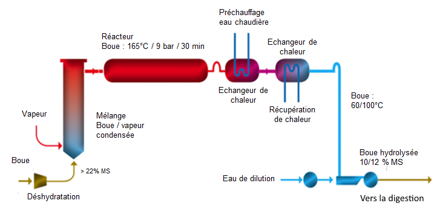
2.1 Modélisation de la colonne d'injection de vapeur
2.1.1 Contexte et enjeux
L'injection de vapeur dans la colonne de condensation est réalisée par une canne d'injection munie de multiples trous. De nombreuses incertitudes persistent sur la géométrie de cette canne :
- La géométrie de la canne d'injection est-elle optimale ?
- Cette géométrie permet-elle de condenser rapidement la vapeur ?
- Permet-elle d'atteindre une parfaite homogénéité des températures dans le réacteur ?
- Est-il possible d'envisager un autre design de canne d'injection ?
- Ce nouveau design pourrait-il être extrapolé à une taille de réacteur industrielle ?
2.1.2 Approche de modélisation
La modélisation repose sur le code de calcul ANSYS Fluent. Pour la colonne d'injection verticale, un modèle diphasique gaz-liquide est développé, prenant en compte :
- La dynamique des poches de vapeur au sein du fluide (approche VOF — Volume of Fluid),
- Le transfert de masse et de chaleur lors de la condensation de la vapeur,
- Le comportement rhéologique non-newtonien de la boue (fluide viscoplastique).
Le diamètre nominal du réacteur de l'unité pilote est de 100 mm (DN 100). Ces géométries seront ensuite extrapolées à une échelle industrielle en DN 450.
| Paramètre | Valeur / Hypothèse |
|---|---|
| Diamètre colonne (pilote) | DN 100 mm |
| Diamètre colonne (industriel) | DN 450 mm |
| Température vapeur injectée | ~190 °C / 12 bar |
| Température cible dans le réacteur | 165 °C / 8 bar |
| Comportement rhéologique boue | Fluide viscoplastique (Bingham) |
| Modèle diphasique | VOF (Volume of Fluid) |
2.1.3 Résultats — Échelle pilote
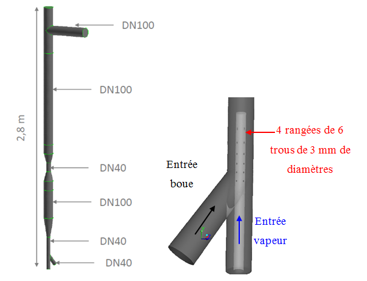
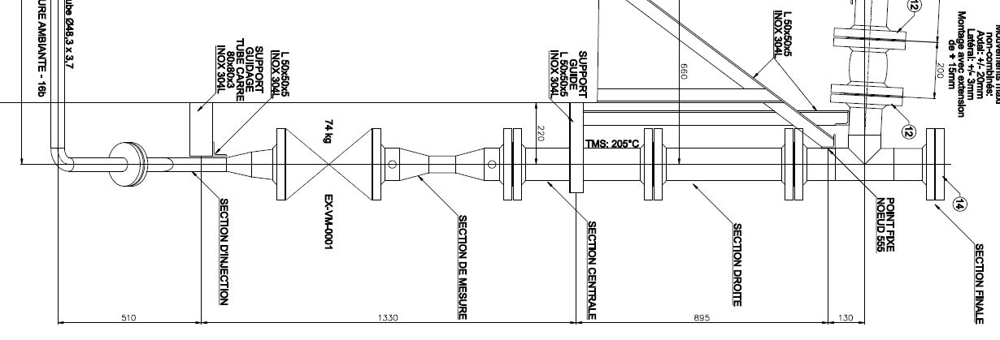
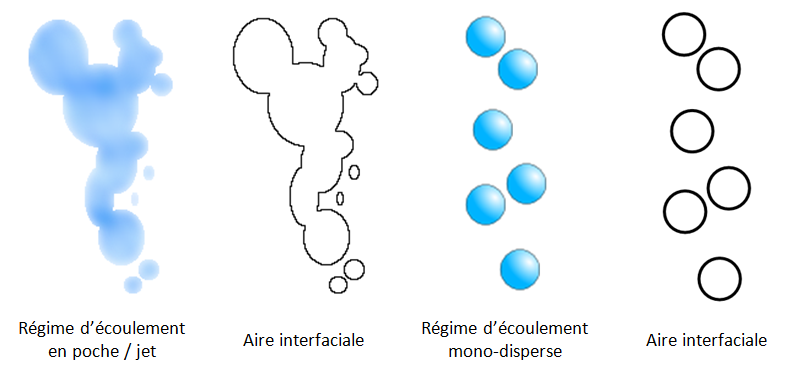
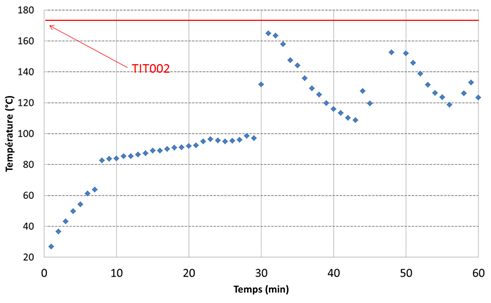
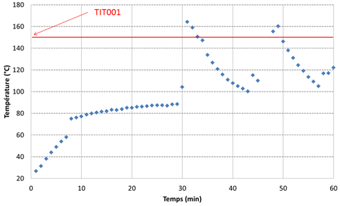
La confrontation des données obtenues par le modèle à celles obtenues expérimentalement sur l'unité pré-industrielle montre que le modèle sous-estime la température dans la colonne de l'ordre de 25 % par rapport à la valeur expérimentale. Cependant, moyennant cette marge d'erreur, le modèle actuel peut être utilisé qualitativement pour étudier et comparer différentes configurations.
Les résultats des simulations indiquent :
- Une dynamique de vapeur sous forme de poches au sein de la colonne,
- Une condensation imparfaite illustrée par une sortie de vapeur en tête de colonne,
- Un effet bénéfique du Venturi permettant de freiner la remontée directe de la vapeur au centre.
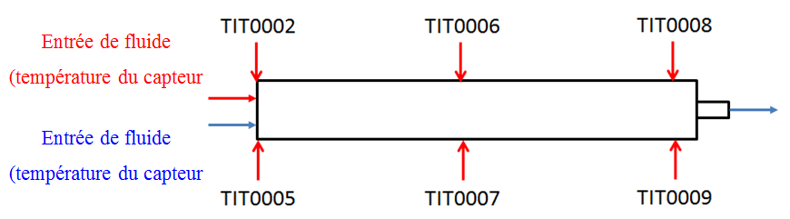
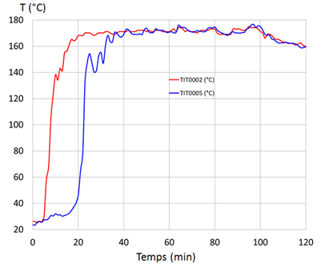
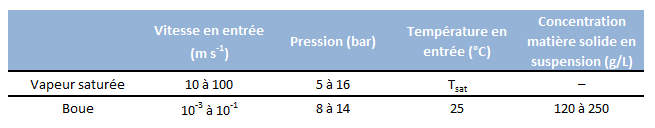
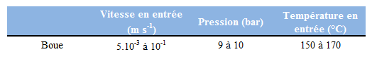
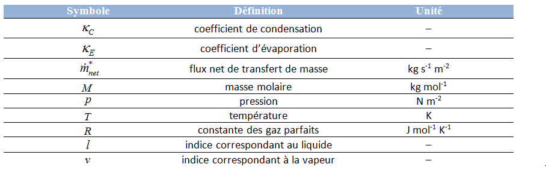
2.2 Modélisation du réacteur d'hydrolyse thermique
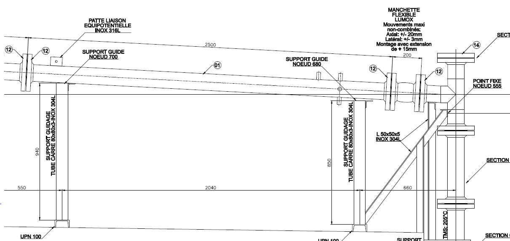
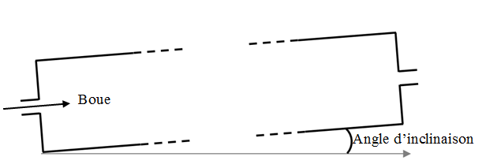
La partie horizontale du réacteur assure le temps de contact entre la boue et les conditions d'hydrolyse (165 °C / 8 bar). La modélisation de cette partie vise à estimer la stratification thermique au sein du réacteur malgré son inclinaison et la présence d'ailettes internes.
2.2.1 Résultats de simulation
Les résultats obtenus pour les simulations mettent en évidence un phénomène de stratification thermique verticale de l'ordre de 10 à 15 °C, ceci malgré l'inclinaison du réacteur et la mise en place d'ailettes internes.
Ce phénomène est également mis en évidence expérimentalement par les thermocouples Nord/Sud du pilote avec un ordre de grandeur plus important (40–80 °C).
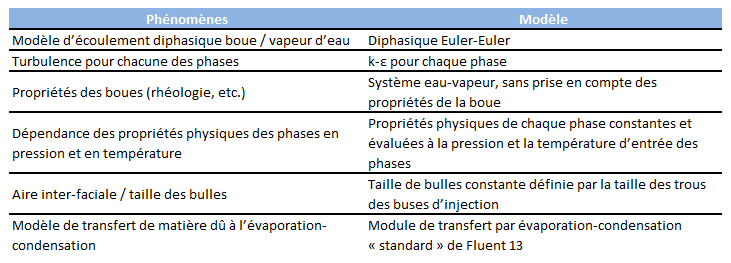
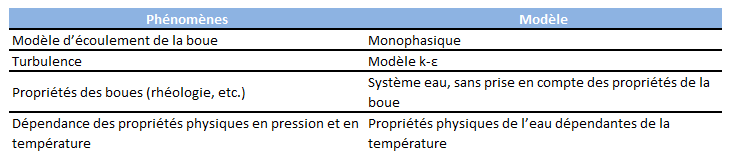
2.3 Application à l'échelle industrielle (DN 450)
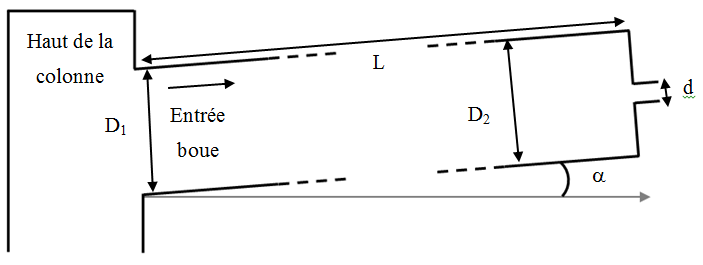
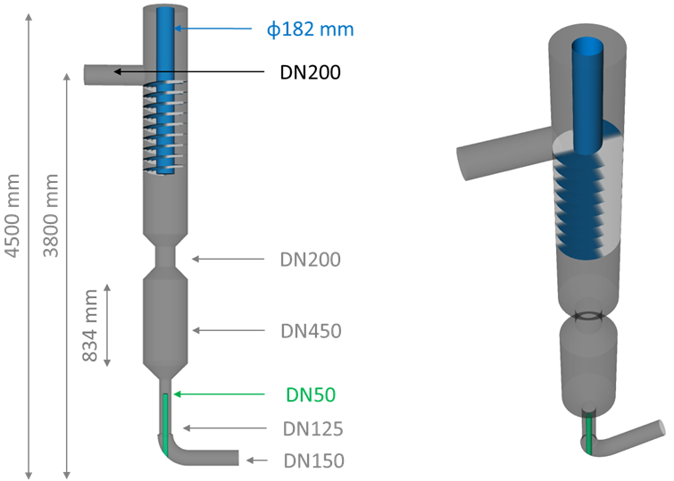
Le modèle d'injection de vapeur développé est appliqué à une géométrie de taille industrielle. Les réacteurs modélisés passent d'un DN 100 à un DN 450. Les résultats obtenus à cette échelle sont cohérents avec l'échelle pilote :
- Un mélange de phases turbulent au niveau de l'injection,
- Des dynamiques de vapeur sous forme de poches au sein de la colonne,
- Un impact bénéfique du Venturi permettant de maintenir la vapeur dans la colonne.
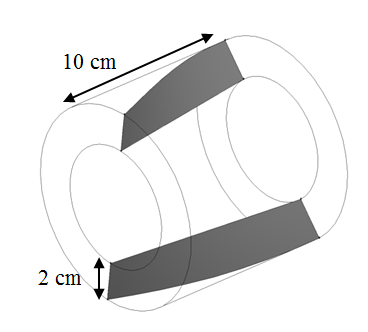
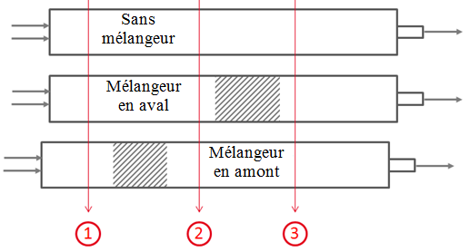
Les simulations avec et sans mélangeur statique en tête de colonne montrent que sa présence induit un maintien de la vapeur dans la colonne et donc une augmentation de l'échange entre phases. En régime permanent, la température en tête de colonne est estimée à 100 °C sans mélangeur contre 130 °C avec mélangeur, soit un gain de 30 %.
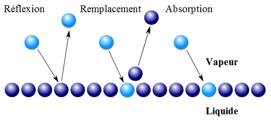
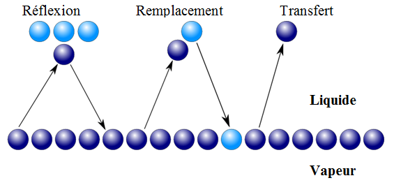
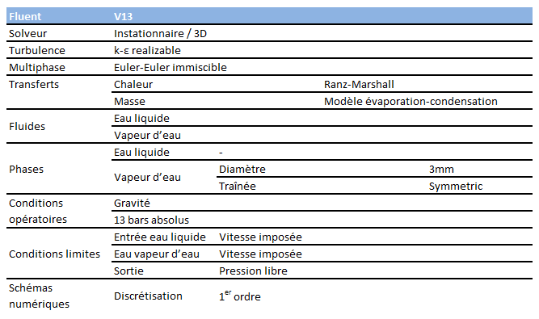
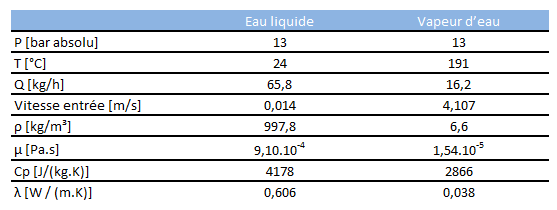
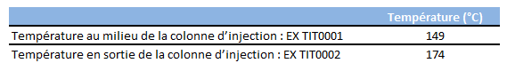
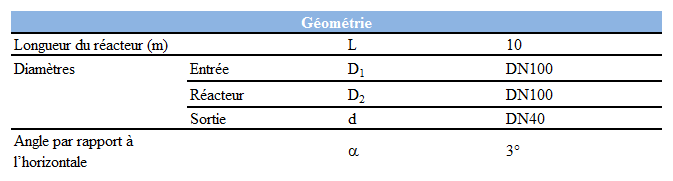
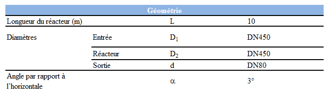
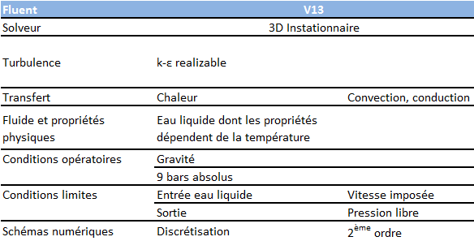
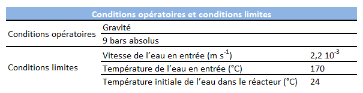

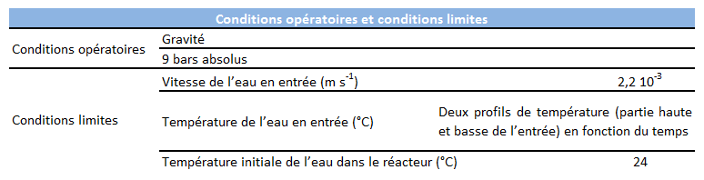
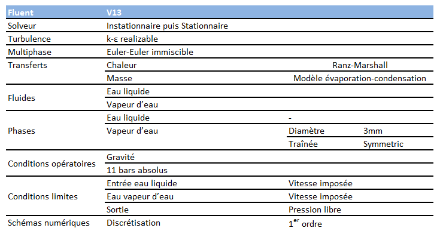
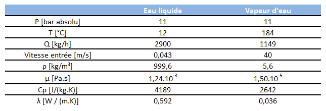
Conclusion du chapitre 2
Les phénomènes physiques en jeu dans ce procédé sont complexes (injection de vapeur à hautes vitesses dans de la boue très concentrée, phénomènes d'évaporation-condensation, fluide non-newtonien) et non directement observables.
Concernant la colonne d'injection, le modèle peut être utilisé qualitativement pour étudier et comparer différentes configurations, moyennant une marge d'erreur de ~25 %.
Concernant le réacteur, une stratification thermique verticale significative a été mise en évidence, corroborée expérimentalement. Ces modèles permettent d'étudier le comportement du procédé à l'échelle industrielle (DN 450) et de préparer les projets industriels en cours ou futurs.